3Modelos lineales para series de tiempo estacionarias
3.1 Procesos de Media Movil (MA)
Un proceso de media móvil de orden\(q\), denotado como MA(\(q\)), modela una serie temporal donde el valor actual depende linealmente de los errores aleatorios ocurridos en los últimos \(q\) periodos. Su forma general es:
Aquí \(\mu\) es la media constante del proceso. - \(\epsilon_t, \epsilon_{t-1}, \ldots, \epsilon_{t-q}\): Términos de error (ruido blanco) independientes e idénticamente distribuidos (i.i.d.), con distribución \(\epsilon_t \sim N(0, \sigma^2)\). - \(\theta_1, \theta_2, \ldots, \theta_q\): Coeficientes reales que miden el impacto de los errores pasados en el valor actual.
3.1.1 Propiedades:
Persistencia del ruido:
El efecto de un shock (\(\epsilon_t\)) no desaparece inmediatamente. En su lugar, influye en las observaciones durante \(q\) periodos consecutivos. Ejemplo: En un modelo MA(2), un error en el tiempo \(t\) afecta a \(Y_t\), \(Y_{t+1}\), y \(Y_{t+2}\).
Decaimiento abrupto:
Después de \(q\) periodos, el impacto del ruido se anula por completo. Esto contrasta con modelos autorregresivos (AR), donde los efectos pueden persistir indefinidamente. Ejemplo: En un MA(3), el error \(\epsilon_{t-3}\) no influye en \(Y_t\), ya que su efecto termina en \(t = 3\).
Interpretación:
- \(Y_t\): Demanda en el día \(t\).
- \(\mu\): Demanda base constante (sin ofertas).
- \(\epsilon_t\): Shock por oferta especial en el día \(t\) (ruido blanco \(\sim N(0, \sigma^2)\)).
- \(\theta_1, \theta_2\): Coeficientes que miden el impacto residual de la oferta en los días posteriores.
3.2 Características de los Modelos MA(q)
3.2.1 Valor esperado
Un proceso MA(\(q\)) tiene una media constante, lo que garantiza estacionariedad en media. Esto se deriva de la linealidad del operador esperanza y la propiedad de media cero de los errores \(\varepsilon_t\):
Explicación:
- Los términos \(\varepsilon_{t-j}\) son ruido blanco, por lo que \(\mathbb{E}(\varepsilon_{t-j}) = 0\) para todo \(j\).
- La constante \(\mu\) representa el nivel base de la serie, independiente del tiempo.
3.2.2 Varianza
La varianza de un proceso MA(\(q\)) refleja la dispersión alrededor de la media \(\mu\) y depende de los coeficientes \(\theta_j\) y la varianza del ruido (\(\sigma^2\)):
Dado que los errores \(\varepsilon_t\) son no correlacionados (\(\mathbb{E}[\varepsilon_t \varepsilon_{t-j}] = 0\) para \(j \neq 0\)), la expresión se simplifica a:
Interpretación:
- Cada término \(\theta_j^2 \sigma^2\) captura la contribución del error rezagado \(j\) a la varianza total.
- La varianza es siempre positiva y aumenta con la magnitud de los coeficientes \(\theta_j\).
3.2.3 Implicaciones clave
Estacionariedad en covarianza:
La media constante (\(\mu\)) y la varianza finita (\(\gamma_0\)) garantizan que el proceso MA(\(q\)) sea débilmente estacionario.
Las autocovarianzas \(\gamma_j\) para \(j > q\) son cero, lo que simplifica el análisis de dependencias temporales.
Efecto de los coeficientes\(\theta_j\):
Coeficientes mayores en magnitud aumentan la volatilidad de la serie (\(\uparrow \gamma_0\)).
Un \(\theta_j = 0\) implica que el error en el lag \(j\) no influye en \(Y_t\).
3.3 Función de autocovarianza de los modelos MA(q)
3.3.1 Autocovarianza de un proceso MA(q)
La j-ésima autocovarianza (\(\gamma_j\)) de un proceso de media móvil de orden \(q\), MA(\(q\)), cuantifica la dependencia lineal entre observaciones separadas por \(j\) periodos. Para \(j = 1, 2, \ldots, q\), se define como:
Dado que los términos de error \(\{\varepsilon_t\}\) son no correlacionados (\(\mathbb{E}[\varepsilon_t \varepsilon_{s}] = 0\) para \(t \neq s\)), solo sobreviven los productos donde los índices coinciden. Esto simplifica la expresión a:
Para \(j > q\), la autocorrelación es cero: \[
\rho_j = 0 \quad \text{si } j > q.
\]
3.3.3 Casos particulares
Proceso MA(1)
Un proceso de media móvil de orden 1, MA(1), se define como: \[
Y_t = \mu + \varepsilon_t + \theta_1 \varepsilon_{t-1},
\]
donde \(\varepsilon_t \sim N(0, \sigma^2)\) es ruido blanco.
Autocovarianzas del MA(1):
Varianza (\(\gamma_0\)): \[
\gamma_0 = \left(1 + \theta_1^2\right) \sigma^2.
\]
Mide la dispersión total alrededor de la media \(\mu\), incluyendo el efecto del shock actual (\(\varepsilon_t\)) y el rezagado (\(\theta_1 \varepsilon_{t-1}\)).
Autocovarianza de primer orden (\(\gamma_1\)): \[
\gamma_1 = \theta_1 \sigma^2.
\]
Captura la dependencia entre observaciones separadas por un periodo.
Autocovarianzas para\(j \geq 2\): \[
\gamma_j = 0 \quad \text{para } j \geq 2.
\]
Los shocks no persisten más allá de un periodo, característica clave de los MA(1).
Proceso MA(2)
Un proceso de media móvil de orden 2, MA(2), se expresa como: \[
Y_t = \mu + \varepsilon_t + \theta_1 \varepsilon_{t-1} + \theta_2 \varepsilon_{t-2}.
\]
Autocovarianzas del MA(2):
Varianza (\(\gamma_0\)): \[
\gamma_0 = \left(1 + \theta_1^2 + \theta_2^2\right) \sigma^2.
\]
Incluye la contribución de los shocks actuales y los dos rezagos anteriores.
Autocovarianza de primer orden (\(\gamma_1\)): \[
\gamma_1 = \left(\theta_1 + \theta_1 \theta_2\right) \sigma^2.
\]
Refleja la influencia combinada del shock en \(t-1\) y su interacción con \(t-2\).
Autocovarianza de segundo orden (\(\gamma_2\)): \[
\gamma_2 = \theta_2 \sigma^2.
\]
Representa el impacto directo del shock en \(t-2\).
Autocovarianzas para\(j \geq 3\): \[
\gamma_j = 0 \quad \text{para } j \geq 3.
\]
Los efectos de los shocks se limitan a dos periodos.
Ejemplo
Código
##### PRIMER EJEMPLO MA(1)set.seed(1234)# Simular un MA(1): Y_t = e_t + 0.7*e_{t-1}ma1 =arima.sim(n =200, list(ma =0.7))# Graficar la seriets.plot(ma1, main ="Serie de tiempo",ylab ="Y_t", col ="#F4B4C9", lwd =2)
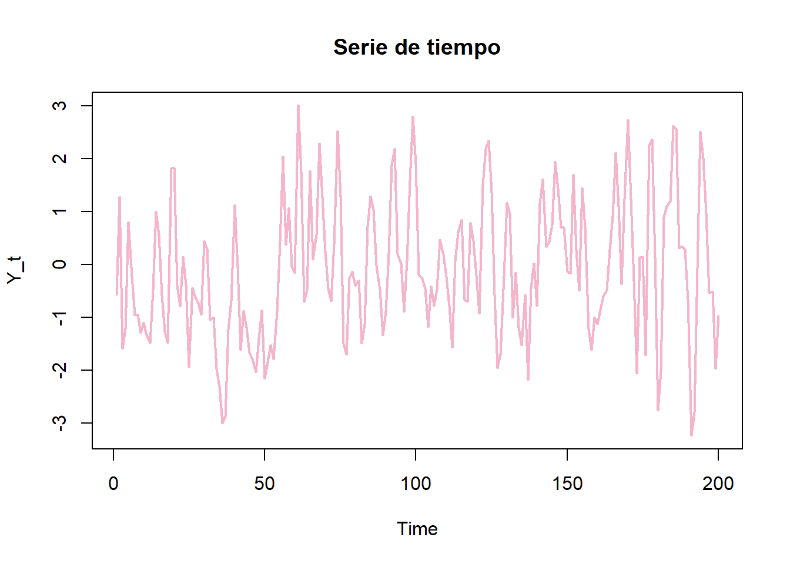
Código
# Correlograma (ACF)acf(ma1, main ="ACF")
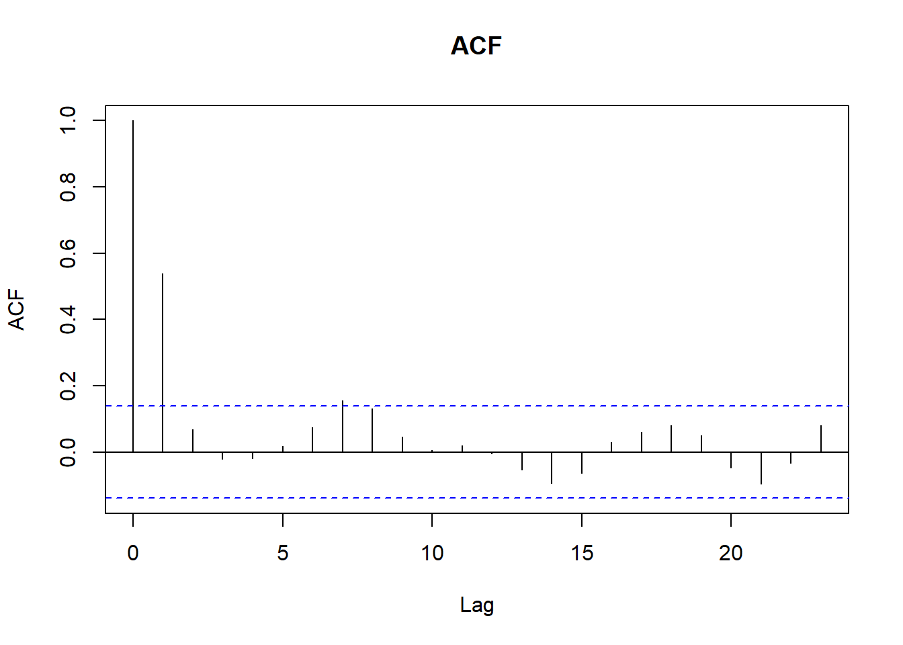
Código
# Correlograma parcial (PACF)pacf(ma1, main ="PACF")
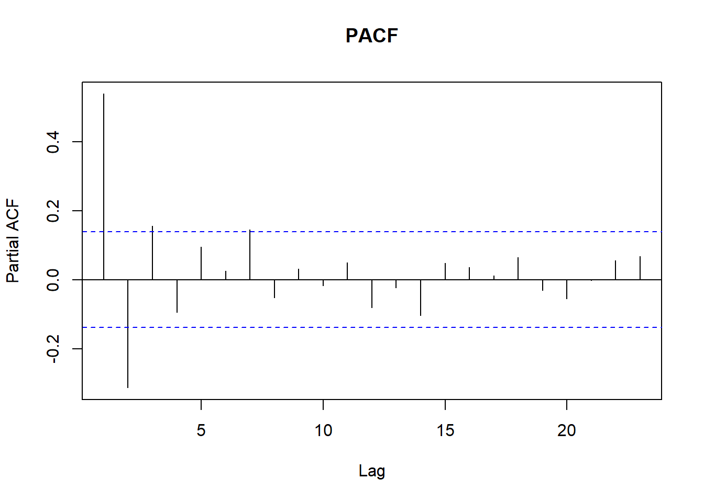
Ejemplo
Código
### SEGUNDO EJEMPLO MA(3)# Simular un MA(3): Y_t = e_t + 0.6*e_{t-1}# - 0.4*e_{t-2} + 0.3*e_{t-3}ma3 <-arima.sim(n =200, list(ma =c(0.6, -0.4, 0.3)))# Graficar la seriets.plot(ma3, main ="Serie de tiempo",ylab ="Y_t", col ="#F4B4C9", lwd =2)
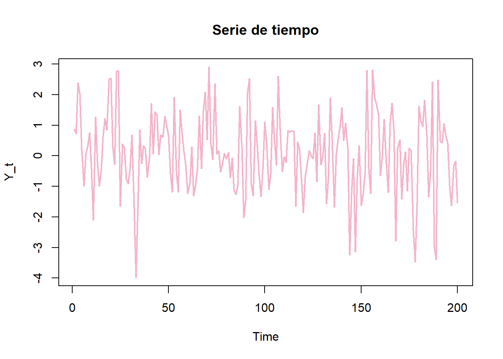
Código
# Correlograma (ACF)acf(ma3, main ="ACF")
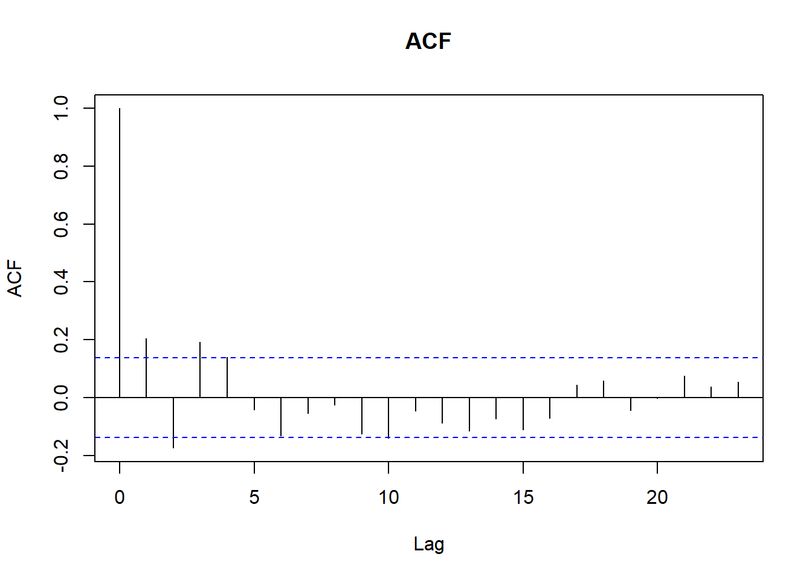
Código
# Correlograma parcial (PACF)pacf(ma3, main ="PACF")
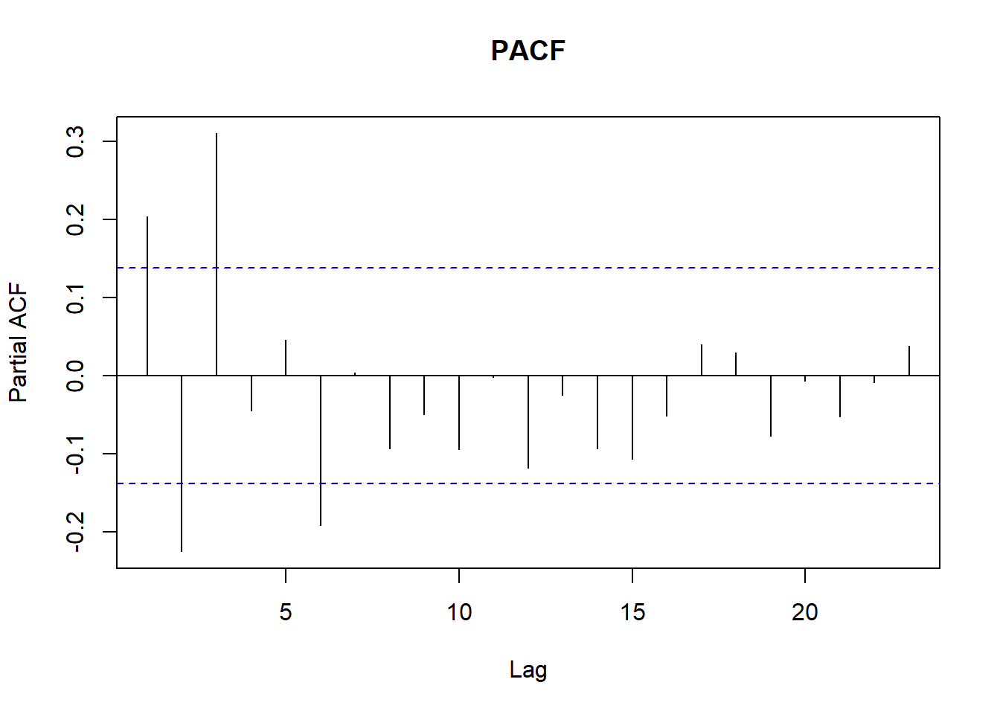
3.4 MA de orden infinito
Un proceso de media móvil de orden infinito, denotado como \(MA(\infty)\), modela series temporales donde el valor actual depende de una combinación lineal infinita de errores pasados. Su estructura matemática se define como:
\(\epsilon_t, \epsilon_{t-1}, \epsilon_{t-2}, \ldots\): Términos de error independientes e idénticamente distribuidos (i.i.d.), con distribución \(\epsilon_t \sim N(0, \sigma^2)\).
\(\psi_j\): Coeficientes reales que ponderan el impacto de los errores pasados en \(Y_t\).
3.4.2 Características principales:
Persistencia infinita del ruido:
A diferencia de los modelos MA(\(q\)), donde los shocks desaparecen después de \(q\) periodos, en un \(MA(\infty)\) el efecto de un error \(\epsilon_t\)perdura indefinidamente. Cada shock influye en todas las observaciones futuras, aunque su impacto disminuye según la magnitud de los coeficientes \(\psi_j\).
Condición de estacionariedad:
Para garantizar que el proceso sea estacionario en covarianza, los coeficientes deben satisfacer: \[
\sum_{j=0}^\infty \psi_j^2 < \infty.
\]
Esta condición asegura que la varianza del proceso sea finita, evitando que las contribuciones acumuladas de los errores pasados divergían.
3.5 Características de los procesos MA(infty)
3.5.1 Valor esperado
La media de un proceso \(MA(\infty)\) se mantiene constante en el tiempo, independientemente de los errores pasados. Esto se deriva directamente de la linealidad del operador esperanza y la propiedad de media cero del ruido blanco \(\epsilon_t\):
\[
\mathbb{E}(Y_t) = \mu.
\]
Esta condición garantiza que el proceso sea estacionario en media, un requisito fundamental para su análisis estadístico.
3.5.2 Varianza
La varianza del proceso \(MA(\infty)\) se calcula considerando la contribución acumulada de todos los términos de error pasados. Dado que los coeficientes \(\psi_j\) ponderan estos errores, la varianza queda expresada como:
Para que esta varianza sea finita (y el proceso sea estacionario en covarianza), la serie de los cuadrados de los coeficientes debe converger:
\[
\sum_{j=0}^{\infty} \psi_j^2 < \infty.
\]
Esta condición asegura que los efectos de los shocks pasados no se acumulen indefinidamente, evitando que la varianza diverja.
3.6 Importancia de los procesos MA(∞)
La representación de media móvil infinita (MA(∞)) es un marco teórico fundamental para analizar series temporales estacionarias. Su relevancia radica en su capacidad para modelar cualquier proceso estacionario no determinístico, una afirmación respaldada por el Teorema de Wold (1938).
3.6.1 Teorema de Wold: La base teórica
Este teorema establece que toda serie temporal estacionaria no determinística puede descomponerse en dos componentes:
1. Una parte determinística (por ejemplo, tendencias o ciclos perfectamente predecibles).
2. Una parte no determinística, expresable como una combinación lineal infinita de errores pasados:
donde:
- \(e_t\) es ruido blanco (\(e_t \sim N(0, \sigma^2)\)).
- Los coeficientes \(\psi_i\) satisfacen \(\sum_{i=0}^{\infty} \psi_i^2 < \infty\), garantizando estacionariedad en covarianza.
3.6.2 Casos especiales de la representación MA(∞)
Aunque el Teorema de Wold es general, en la práctica se utilizan modelos más simples que son subclases de MA(∞):
Modelos MA(\(q\)):
Solo un número finito de coeficientes \(\psi_i\) son no nulos. Por ejemplo, en un MA(2), \(\psi_0 = 1\), \(\psi_1 = \theta_1\), \(\psi_2 = \theta_2\), y \(\psi_j = 0\) para \(j > 2\).
Modelos AR(\(p\)):
Los coeficientes \(\psi_j\) se generan recursivamente a partir de un número finito de parámetros autorregresivos. Por ejemplo, un AR(1) con parámetro \(\phi\) tiene \(\psi_j = \phi^j\), lo que implica una dependencia exponencial decreciente.
Modelos ARMA(\(p, q\)):
Combina componentes AR y MA finitos, permitiendo mayor flexibilidad al capturar tanto dependencias autorregresivas como shocks transitorios.
3.7 Procesos de autorregresión de orden 1 (AR)
Un proceso AR(1) se define mediante la ecuación: \[
Y_t = c + \phi Y_{t-1} + \epsilon_t,
\]
donde:
- \(\epsilon_t \sim N(0, 1)\): Ruido blanco gaussiano.
- \(c\): Término constante (nivel base de la serie).
- \(\phi\): Coeficiente autorregresivo que mide la influencia del valor pasado \(Y_{t-1}\) en \(Y_t\).
3.7.1 Condición de Estacionariedad
El proceso AR(1) es estacionario en covarianza si y solo si: \[
|\phi| < 1.
\] Interpretación:
- Si \(|\phi| \geq 1\), la varianza del proceso diverge (no estacionario).
- Ejemplo: Si \(\phi = 1\), el modelo se convierte en un paseo aleatorio: \(Y_t = c + Y_{t-1} + \epsilon_t\), con varianza creciente en el tiempo.
3.7.2 Propiedades Estadísticas
Media
La media del proceso estacionario es constante: \[
\mu = \frac{c}{1 - \phi}.
\] Derivación: \[
\mathbb{E}(Y_t) = c + \phi \mathbb{E}(Y_{t-1}) \implies \mu = c + \phi \mu \implies \mu = \frac{c}{1 - \phi}.
\]
La autocorrelación en el lag \(k\) decae exponencialmente: \[
\rho_k = \phi^k \quad (k \geq 0).
\]
- ACF (Función de Autocorrelación): Decae lentamente, mostrando dependencias persistentes.
- PACF (Función de Autocorrelación Parcial): Tiene un pico significativo en \(k=1\) y es cero para \(k > 1\).
3.7.3 Representación MA(∞) bajo estacionariedad
Cuando \(|\phi| < 1\), el proceso AR(1) puede expresarse como una combinación lineal infinita de shocks pasados, es decir, un MA(∞). Esto se demuestra expandiendo recursivamente la ecuación original:
\[
\begin{aligned}
Y_t &= c + \phi Y_{t-1} + \varepsilon_t \\
&= c + \phi (c + \phi Y_{t-2} + \varepsilon_{t-1}) + \varepsilon_t \\
&= c + \phi c + \phi^2 Y_{t-2} + \phi \varepsilon_{t-1} + \varepsilon_t \\
&\;\;\vdots \\
&= \sum_{k=0}^{\infty} \phi^k c + \sum_{j=0}^{\infty} \phi^j \varepsilon_{t-j}.
\end{aligned}
\]
La convergencia de estas series está garantizada por la condición \(|\phi| < 1\). Simplificando:
Media del proceso: \[
\mu = \frac{c}{1 - \phi}.
\]
Corresponde al primer término de la serie geométrica convergente.
Estructura de dependencia:
Los shocks pasados \(\varepsilon_{t-j}\) influyen en \(Y_t\) con pesos \(\phi^j\), que decaen exponencialmente. Esto refleja cómo el impacto de un shock se disipa gradualmente en el tiempo.
Vínculo con estacionariedad:
La convergencia \(\sum_{j=0}^{\infty} \phi^{2j} < \infty\) asegura que la varianza sea finita, cumpliendo con la condición de estacionariedad en covarianza.
3.8 Características de los procesos AR(1)
3.8.1 Valor esperado
Para un proceso AR(1) estacionario (\(|\phi| < 1\)), la media se obtiene aplicando el operador esperanza a su representación MA(∞): \[
\mathbb{E}(Y_t) = \mathbb{E}\left[ \frac{c}{1 - \phi} + \sum_{j=0}^{\infty} \phi^j \varepsilon_{t-j} \right].
\]
Dado que \(\mathbb{E}(\varepsilon_{t-j}) = 0\) para todo \(j\), solo sobrevive el término constante: \[
\mu = \frac{c}{1 - \phi}.
\]
Esto confirma que el proceso tiene media constante, cumpliendo con la estacionariedad en media.
3.8.2 Varianza
La varianza del proceso se calcula a partir de la desviación respecto a la media: \[
\gamma_0 = \mathbb{E}\left[(Y_t - \mu)^2\right] = \mathbb{E}\left[\left(\sum_{j=0}^{\infty} \phi^j \varepsilon_{t-j}\right)^2\right].
\]
Expandimos el cuadrado y utilizamos la independencia de los términos \(\varepsilon_{t-j}\): \[
\gamma_0 = \sum_{j=0}^{\infty} \phi^{2j} \mathbb{E}(\varepsilon_{t-j}^2) = \sigma^2 \sum_{j=0}^{\infty} \phi^{2j}.
\]
La serie geométrica \(\sum_{j=0}^{\infty} \phi^{2j}\) converge bajo \(|\phi| < 1\), resultando en: \[
\gamma_0 = \frac{\sigma^2}{1 - \phi^2}.
\]
Esta expresión refleja cómo la varianza del proceso depende tanto de la volatilidad del ruido (\(\sigma^2\)) como de la persistencia autorregresiva (\(\phi\)).
Condición clave:
- \(|\phi| < 1\) asegura convergencia de la serie y estacionariedad en covarianza.
- Si \(|\phi| \geq 1\), la varianza diverge, y el proceso no es estacionario.
3.9 Función de autocovarianza de los procesos AR(1)
3.9.1 Autocovarianza (\(\gamma_j\))
Para un proceso AR(1) estacionario (\(|\phi| < 1\)), la j-ésima autocovarianza se deriva utilizando su representación MA(∞): \[
Y_t - \mu = \sum_{k=0}^{\infty} \phi^k \varepsilon_{t-k}.
\]
La autocovarianza se calcula como: \[
\gamma_j = \mathbb{E}\left[ \left( \sum_{k=0}^\infty \phi^k \varepsilon_{t-k} \right) \left( \sum_{m=0}^\infty \phi^m \varepsilon_{t-j-m} \right) \right].
\]
Debido a la independencia de los términos \(\varepsilon_t\), solo sobreviven los productos donde los índices coinciden (\(k = m + j\)): \[
\gamma_j = \sum_{k=0}^\infty \phi^{k+j} \phi^k \sigma^2 = \phi^j \sigma^2 \sum_{k=0}^\infty \phi^{2k}.
\]
La serie geométrica converge bajo \(|\phi| < 1\), resultando en: \[
\gamma_j = \frac{\phi^j \sigma^2}{1 - \phi^2} \quad \text{para } j \geq 0.
\]
3.9.2 Autocorrelación (\(\rho_j\))
La j-ésima autocorrelación se obtiene normalizando la autocovarianza por la varianza (\(\gamma_0\)): \[
\rho_j = \frac{\gamma_j}{\gamma_0} = \frac{\frac{\phi^j \sigma^2}{1 - \phi^2}}{\frac{\sigma^2}{1 - \phi^2}} = \phi^j.
\]
Esto implica que las autocorrelaciones decaen exponencialmente con el lag \(j\): \[
\rho_j = \phi^j \quad \text{para } j \geq 0.
\]
Ejemplo
Código
## PRIMER EJEMPLO AR(1)# Simular un AR(1): Y_t = 0.5*Y_{t-1} + e_tar1 <-arima.sim(n =200, list(ar =0.5))# Graficar la seriets.plot(ar1, main ="Serie de tiempo",ylab ="Y_t", col ="#F4B4C9", lwd =2)
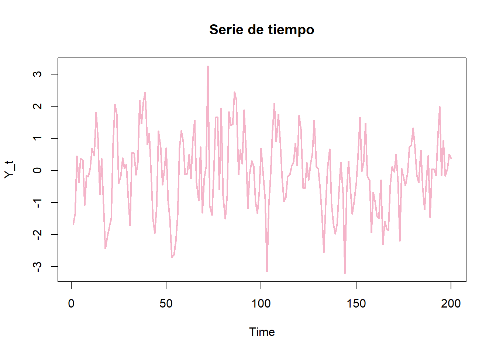
Código
# Correlograma (ACF)acf(ar1, main ="ACF")
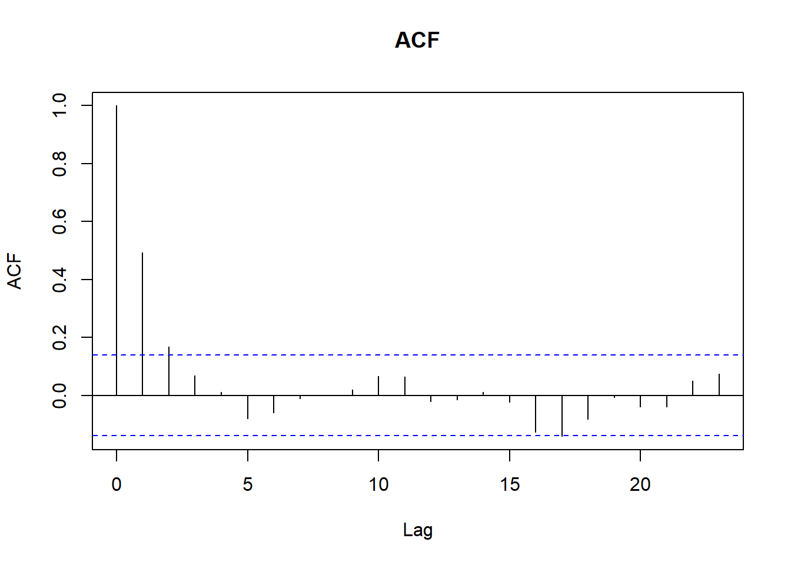
Código
# Correlograma parcial (PACF)pacf(ar1, main ="PACF")
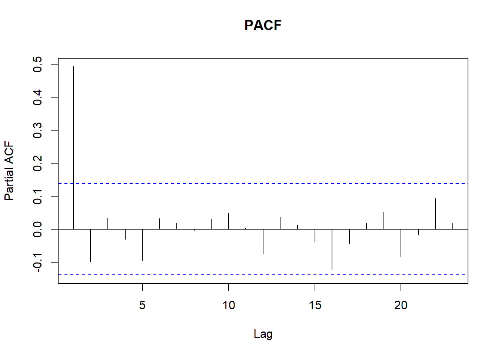
3.10 Procesos de autorregresión de orden p
Un proceso AR(\(p\)) se define mediante la ecuación: \[
Y_t = c + \phi_1 Y_{t-1} + \phi_2 Y_{t-2} + \cdots + \phi_p Y_{t-p} + \epsilon_t,
\]
donde:
- \(\{\epsilon_t\}\): Ruido blanco gaussiano (\(\epsilon_t \sim N(0, \sigma^2)\)).
- \(c\): Constante.
- \(\phi_1, \ldots, \phi_p\): Coeficientes autorregresivos.
3.10.1 Estacionariedad de procesos AR(p)
La estacionariedad del proceso AR(\(p\)) requiere que todas las raíces de su ecuación característica: \[
1 - \phi_1 z - \phi_2 z^2 - \cdots - \phi_p z^p = 0,
\]
se encuentren fuera del círculo unitario (\(|z| > 1\)).
3.10.2 Comportamiento de los correlogramas
Correlograma (ACF): Decae de manera lenta, reflejando la persistencia de los shocks pasados.
Correlograma parcial (PACF): Muestra un corte abrupto después del lag \(p\), es decir, \(\rho_{parcial}(j) = 0\) para \(j > p\).
Los procesos AR(\(p\)) son útiles para modelar fenómenos con persistencia temporal, donde el valor actual depende de una combinación lineal de \(p\) observaciones anteriores.
Un proceso autorregresivo de orden \(p\), AR(\(p\)), puede expresarse mediante el operador de traslación\(B\), donde \(B^k Y_t = Y_{t-k}\): \[
\Phi(B) Y_t = c + \varepsilon_t,
\]
con: \[
\Phi(B) = 1 - \phi_1 B - \phi_2 B^2 - \cdots - \phi_p B^p.
\]
3.10.3 Condición de Invertibilidad
Si todas las raíces \(z\) del polinomio característico: \[
\Phi(z) = 1 - \phi_1 z - \phi_2 z^2 - \cdots - \phi_p z^p,
\]
satisfacen \(|z| > 1\), entonces:
1. \(\Phi(z) \neq 0\) para \(|z| \leq 1\).
2. El operador \(\Phi(B)\) es invertible, permitiendo escribir: \[
Y_t = c \cdot \Phi^{-1}(B) + \Phi^{-1}(B) \varepsilon_t.
\]
3.10.4 Expansión en Serie de Potencias
La inversa de \(\Phi(B)\) admite una representación en serie de potencias para \(|z| \leq 1\): \[
Y_t = \frac{c}{1 - \phi_1 - \phi_2 - \cdots - \phi_p} + \sum_{j=0}^\infty \psi_j \varepsilon_{t-j}.
\]
Los coeficientes \(\psi_j\) cumplen: \[
\sum_{j=0}^\infty |\psi_j| < \infty,
\]
garantizando la convergencia de la serie y la estacionariedad del proceso.
3.10.5 Estacionariedad de los procesos AR(p)
Un proceso autorregresivo de orden \(p\), AR(\(p\)), puede representarse como un MA(\(\infty\)) bajo condiciones específicas de sus coeficientes. Esta representación es clave para demostrar su estacionariedad.
3.10.6 Condición sobre las raíces del polinomio característico
El polinomio característico asociado al proceso AR(\(p\)) es: \[
\Phi(z) = 1 - \phi_1 z - \phi_2 z^2 - \cdots - \phi_p z^p.
\]
Para garantizar estacionariedad, todas las raíces\(z\) de \(\Phi(z) = 0\) deben ubicarse fuera del círculo unitario en el plano complejo: \[
|z| > 1.
\]
3.10.7 Relación con procesos MA(\(\infty\))
Cuando se cumple la condición anterior:
1. El operador \(\Phi(B)\) asociado al proceso AR(\(p\)) es invertible.
2. El proceso puede expresarse como: \[
Y_t = \frac{c}{1 - \phi_1 - \phi_2 - \cdots - \phi_p} + \sum_{j=0}^\infty \psi_j \varepsilon_{t-j},
\]
donde los coeficientes \(\psi_j\) son absolutamente sumables: \[
\sum_{j=0}^\infty |\psi_j| < \infty.
\]
3.10.8 Estacionariedad
La representación MA(\(\infty\)) asegura que el proceso AR(\(p\)) es estacionario en covarianza, ya que:
- La media \(\mathbb{E}(Y_t)\) es constante.
- Las autocovarianzas \(\gamma_j\) dependen únicamente del lag \(j\).
- La convergencia de \(\sum \psi_j^2\) garantiza varianza finita.
Esta conexión subraya que la estacionariedad del AR(\(p\)) está intrínsecamente ligada a la estructura de sus coeficientes y su polinomio característico.
Ejemplo
Código
### SEGUNDO EJEMPLO AR(4)set.seed(456)# Simular un AR(4): Y_t = 0.5*Y_{t-1} - 0.3*Y_{t-2} + 0.2*Y_{t-3}# + 0.1*Y_{t-4} + e_tar4 =arima.sim(n =500, list(ar =c(0.5, -0.3, 0.2, 0.1)))# Graficar la seriets.plot(ar4, main ="Serie de tiempo",ylab ="Y_t", col ="#F4B4C9", lwd =1)
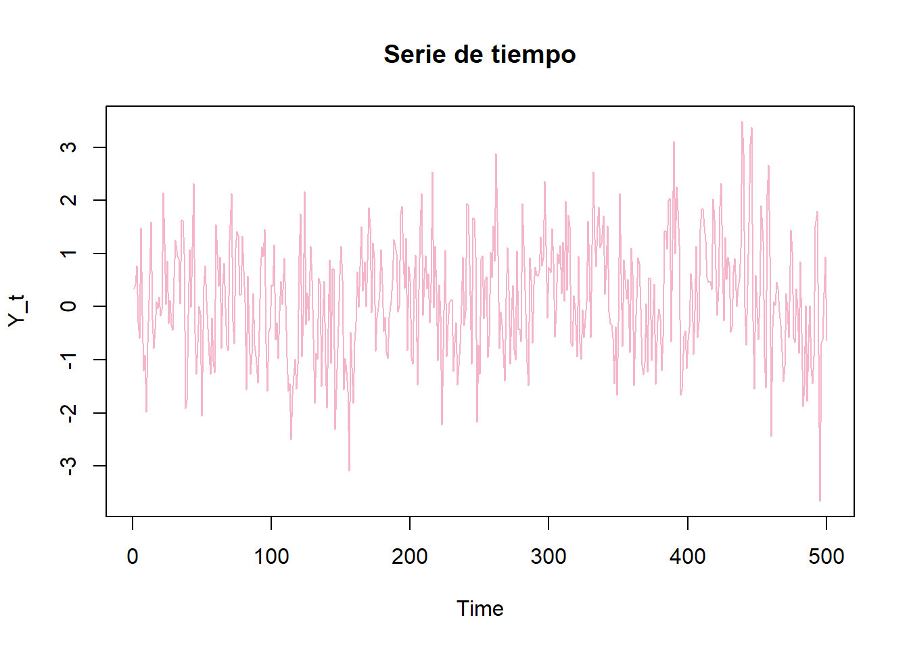
Código
# Correlograma (ACF)acf(ar4, main ="ACF")
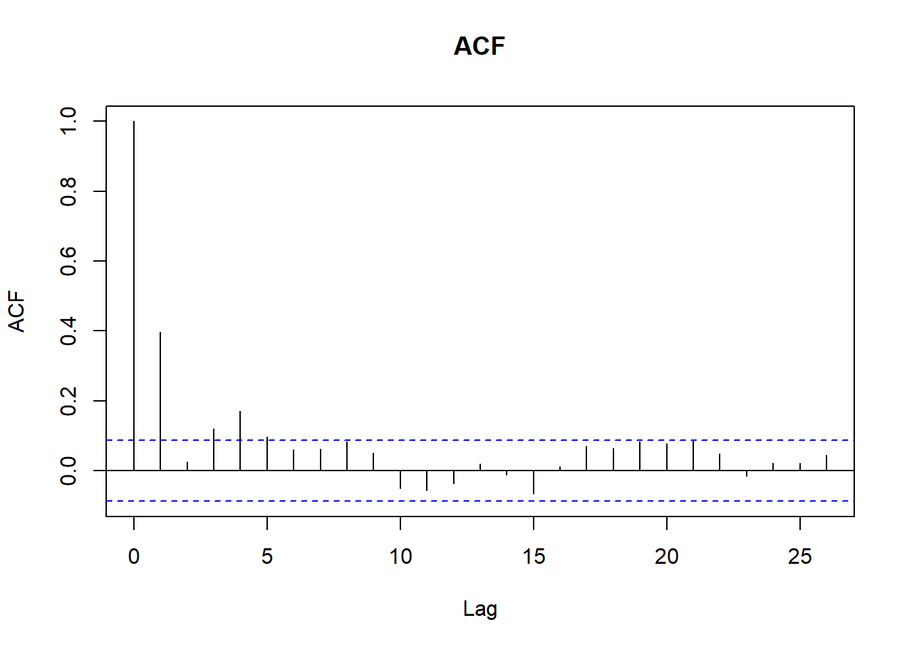
Código
# Correlograma parcial (PACF)pacf(ar4, main ="PACF")
Un proceso ARMA(p, q) combina componentes autorregresivos (AR) y de media móvil (MA) en una única ecuación: \[
Y_t = c + \phi_1 Y_{t-1} + \cdots + \phi_p Y_{t-p} + \epsilon_t + \theta_1 \epsilon_{t-1} + \cdots + \theta_q \epsilon_{t-q},
\]
donde:
- \(\{\epsilon_t\}\): Ruido blanco con distribución \(N(0, \sigma^2)\).
- \(c\): Término constante que ajusta el nivel base de la serie.
- \(\phi_1, \ldots, \phi_p\): Coeficientes autorregresivos que vinculan \(Y_t\) con sus valores pasados.
- \(\theta_1, \ldots, \theta_q\): Coeficientes de media móvil que ponderan los errores pasados.
3.11.1 Estacionariedad
La estacionariedad del proceso ARMA(p, q) depende exclusivamente de los coeficientes autorregresivos (\(\phi_j\)). Para garantizarla, todas las raíces del polinomio característico: \[
\Phi(z) = 1 - \phi_1 z - \phi_2 z^2 - \cdots - \phi_p z^p,
\]
deben ubicarse fuera del círculo unitario (\(|z| > 1\)). Esta condición es idéntica a la requerida para los procesos AR(p).
3.11.2 Comportamiento de los correlogramas
Función de Autocorrelación (ACF): Decae de manera exponencial o sinusoidal, sin cortes abruptos.
Función de Autocorrelación Parcial (PACF): También muestra un decaimiento gradual, similar al de la ACF.
Estos patrones dificultan la identificación directa de los órdenes \(p\) y \(q\), ya que no presentan cortes claros. Por ello, se requieren técnicas complementarias, como el uso de correlaciones extendidas o criterios de información (AIC, BIC), para determinar los valores óptimos de \(p\) y \(q\).
Los modelos ARMA(p, q) son herramientas versátiles para modelar series temporales con dependencias mixtas, capturando tanto la influencia de observaciones pasadas como la de shocks recientes. Su aplicación es fundamental en campos como econometría y forecasting.
3.11.3 Representación MA(∞) de un proceso ARMA(p, q)
Un proceso ARMA(p, q) puede expresarse mediante operadores de retardo \(B\) (\(B^k Y_t = Y_{t-k}\)) como: \[
\Phi(B) Y_t = c + \Theta(B) \varepsilon_t,
\]
donde:
- \(\Phi(B) = 1 - \phi_1 B - \cdots - \phi_p B^p\) (componente AR),
- \(\Theta(B) = 1 + \theta_1 B + \cdots + \theta_q B^q\) (componente MA).
3.11.4 Condición de estacionariedad
La estacionariedad del modelo depende de la componente autorregresiva (AR). Para garantizarla:
- Todas las raíces \(z\) del polinomio \(\Phi(z) = 1 - \phi_1 z - \cdots - \phi_p z^p\) deben cumplir \(|z| > 1\).
- Esto asegura que \(\Phi(B)\) sea invertible dentro del círculo unitario, permitiendo una representación MA(∞).
3.11.5 Expansión en MA(∞)
Si se satisface la condición anterior, el proceso ARMA(p, q) admite una representación de media móvil infinita: \[
Y_t = \frac{c}{1 - \phi_1 - \cdots - \phi_p} + \sum_{j=0}^\infty \psi_j \varepsilon_{t-j},
\]
donde:
- \(\mu = \frac{c}{1 - \phi_1 - \cdots - \phi_p}\): Media constante del proceso.
- \(\psi_j\): Coeficientes obtenidos de la relación \(\frac{\Theta(B)}{\Phi(B)}\), que cumplen \(\sum_{j=0}^\infty |\psi_j| < \infty\).
3.11.6 Estacionariedad
La convergencia absoluta de los coeficientes \(\psi_j\) garantiza:
- Varianza finita: \(\gamma_0 = \sigma^2 \sum_{j=0}^\infty \psi_j^2 < \infty\).
- Autocovarianzas dependientes solo del lag \(j\): \(\gamma_j = \sigma^2 \sum_{k=0}^\infty \psi_k \psi_{k+j}\).
Esta estructura asegura que el proceso ARMA(p, q) sea estacionario en covarianza bajo las condiciones mencionadas.
3.11.7 Características de los procesos ARMA(p, q)
Valor esperado
La media de un proceso ARMA(p, q) se obtiene mediante su representación como MA(∞) y está dada por: \[
\mathbb{E}(Y_t) = \frac{c}{1 - \phi_1 - \phi_2 - \cdots - \phi_p}.
\]
Esta expresión refleja el equilibrio entre el término constante \(c\) y la suma de los coeficientes autorregresivos (\(\phi_j\)), garantizando una media constante en el tiempo.
Varianza y autocovarianzas
Para calcular la varianza (\(\gamma_0\)) y las autocovarianzas (\(\gamma_j\)), se analizan las desviaciones del proceso respecto a su media (\(\tilde{Y}_t = Y_t - \mathbb{E}(Y_t)\)).
Para\(j \geq q + 1\):
Las autocovarianzas siguen una relación recursiva derivada de la componente AR: \[
\gamma_j = \phi_1 \gamma_{j-1} + \phi_2 \gamma_{j-2} + \cdots + \phi_p \gamma_{j-p}.
\]
Para\(j < q + 1\):
El cálculo se complica debido a la correlación entre los errores (\(\varepsilon_{t-j}\)) y los valores pasados de \(Y_t\). Esto requiere resolver un sistema de ecuaciones que integra tanto los coeficientes AR (\(\phi_j\)) como los MA (\(\theta_j\)).
La varianza (\(\gamma_0\)) y las autocovarianzas iniciales (\(\gamma_1, \ldots, \gamma_q\)) no pueden derivarse directamente de la recursión y dependen de interacciones específicas entre los componentes AR y MA.
Nota: Las ecuaciones de Yule-Walker adaptadas para modelos ARMA permiten calcular estas cantidades, aunque su resolución exige métodos numéricos avanzados.
3.11.8 Caso particular: Proceso ARMA(1, 1)
Un proceso ARMA(1, 1) se define mediante la ecuación: \[
Y_t = \phi Y_{t-1} + \varepsilon_t + \theta \varepsilon_{t-1},
\]
donde \(\varepsilon_t \sim N(0, \sigma^2)\) es ruido blanco.
Valor esperado
Dado que el modelo no incluye un término constante explícito, la media del proceso es: \[
\mathbb{E}(Y_t) = 0.
\]
Representación MA(∞)
Utilizando el operador de retardo \(B\) (\(B^k Y_t = Y_{t-k}\)), el proceso puede reescribirse como: \[
Y_t = (1 + \phi B + \phi^2 B^2 + \cdots)(1 + \theta B) \varepsilon_t.
\]
Al expandir esta expresión, obtenemos: \[
Y_t = \varepsilon_t + (\phi + \theta) \sum_{i=1}^\infty \phi^{i-1} \varepsilon_{t-i}.
\]
Varianza
La varianza de \(Y_t\) se calcula considerando la contribución de todos los términos de la serie: \[
\begin{aligned}
\text{Var}(Y_t) &= \sigma^2 + (\phi + \theta)^2 \sum_{i=1}^\infty \phi^{2(i-1)} \sigma^2 \\
&= \sigma^2 \left( 1 + (\phi + \theta)^2 \cdot \frac{1}{1 - \phi^2} \right) \quad \text{(serie geométrica)} \\
&= \sigma^2 \left( 1 + \frac{(\phi + \theta)^2}{1 - \phi^2} \right).
\end{aligned}
\]
Nota: La expresión anterior supone \(|\phi| < 1\) para garantizar la convergencia de la serie geométrica. Este resultado subraya cómo la varianza depende tanto de los coeficientes autorregresivos (\(\phi\)) como de los de media móvil (\(\theta\)).
3.11.9 Cálculo de autocovarianzas para el proceso ARMA(1, 1)
Para calcular la autocovarianza \(\gamma_k = \mathbb{E}[Y_t Y_{t+k}]\) en un modelo ARMA(1, 1), partimos de la representación MA(∞) del proceso: \[
Y_t = \varepsilon_t + (\phi + \theta) \sum_{i=1}^\infty \phi^{i-1} \varepsilon_{t-i}.
\]
Dado que los errores \(\varepsilon_t\) son independientes (\(\mathbb{E}[\varepsilon_t \varepsilon_s] = 0\) para \(t \neq s\)), solo sobreviven los términos donde los índices coinciden. Al tomar esperanza:
Primer término:
Corresponde a la contribución directa de los errores alineados en el lag \(k\): \[
(\phi + \theta) \phi^{k-1} \sigma^2.
\]
Segundo término:
Involucra la serie geométrica generada por la interacción de los coeficientes: \[
(\phi + \theta)^2 \sigma^2 \phi^k \cdot \frac{1}{1 - \phi^2} \quad \text{(suponiendo } |\phi| < 1 \text{)}.
\]
Simplificación adicional:
Para \(k = 0\), esto se reduce a la varianza previamente calculada: \[
\gamma_0 = \sigma^2 \left( 1 + \frac{(\phi + \theta)^2}{1 - \phi^2} \right).
\]
Para \(k \geq 1\), la autocovarianza decae exponencialmente con el lag \(k\), característica típica de los procesos ARMA.
Nota: La condición \(|\phi| < 1\) es esencial para garantizar la convergencia de la serie geométrica y, por ende, la estacionariedad del proceso.
La k-ésima autocorrelación (\(\rho_k\)) se obtiene al dividir la autocovarianza \(\gamma_k\) entre la varianza \(\gamma_0\): \[
\rho_k = \frac{\phi^{k-1}(\phi + \theta) \left( 1 + \frac{\phi(\phi+\theta)}{1+\phi^2} \right)}{1 + \frac{(\phi+\theta)^2}{1+\phi^2}}.
\]
De esta expresión, se deduce que las autocorrelaciones siguen una relación recursiva: \[
\rho_k = \phi \rho_{k-1} \quad \text{para } k \geq 1.
\]
Esta relación refleja que el decaimiento de las autocorrelaciones está gobernado por el coeficiente autorregresivo \(\phi\), independientemente del lag \(k\).
Ejemplo
Código
### ARMA(1,1) Y_t = 0.6 Y_{t-1} + e_t - 0.4e_{t-1}arma11 =arima.sim(n =500,model =list(ar =0.6, ma =-0.4))# Graficar seriests.plot(arma11, main ="Serie de tiempo",ylab ="Y_t", col ="#F4B4C9", lwd =2)
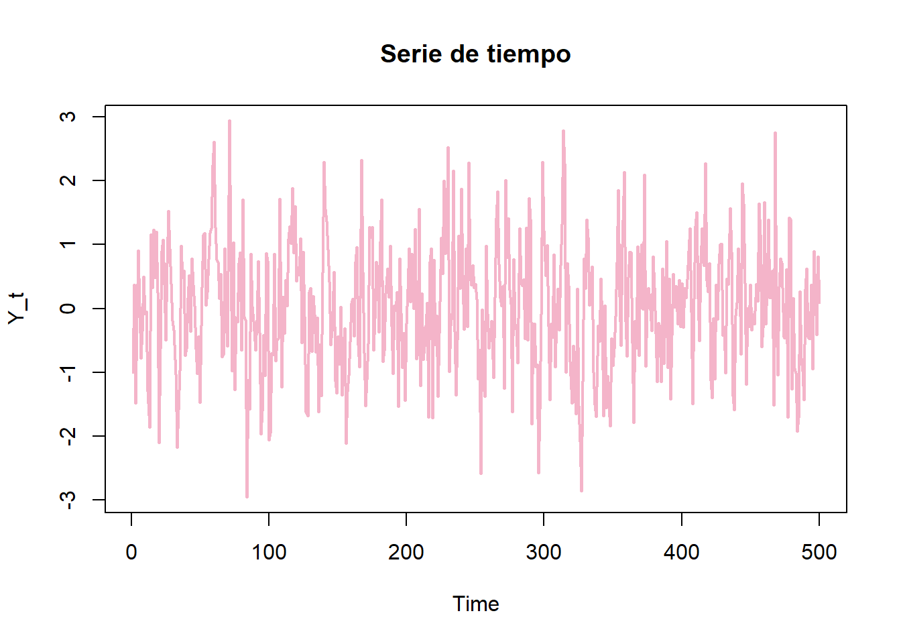
Código
# ACF y PACFacf(arma11, main ="ACF")
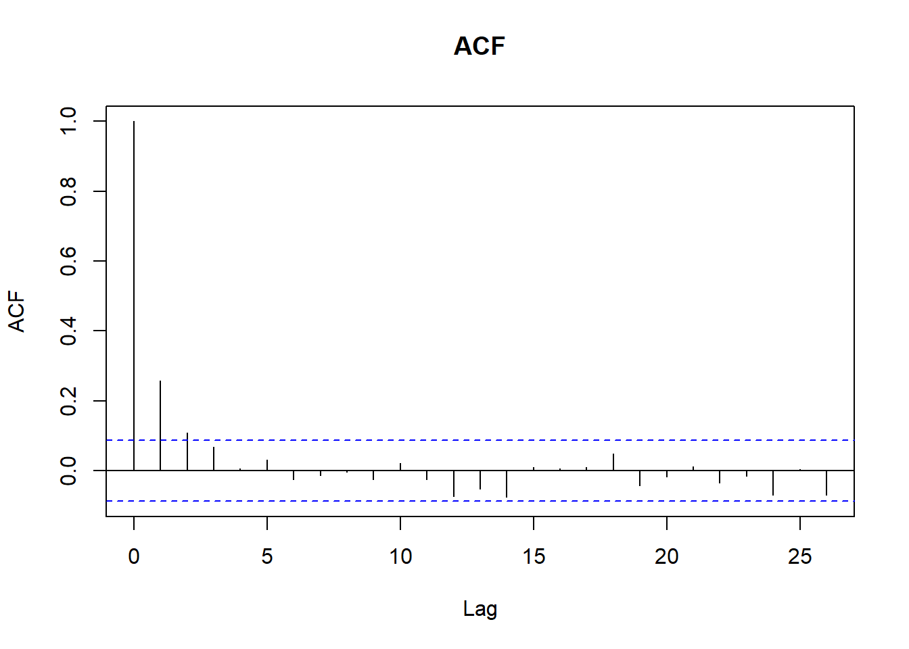
Código
pacf(arma11, main ="PACF")
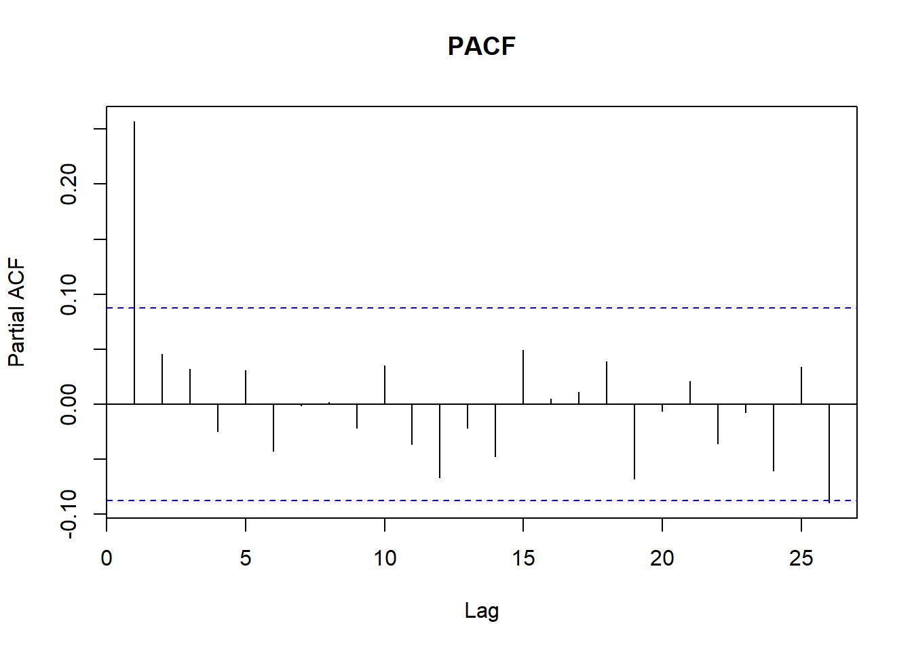
Ejemplo
Código
### ARMA (2,2) Y_t = 0.6 Y_{t-1} + 0.3 Y_{t-2} + e_t # - 0.4e_{t-1} - 0.3 e_{t-2}arma22 =arima.sim(n =500,model =list(ar =c(0.6, 0.3),ma =c(-0.4, -0.3)))# Graficar seriests.plot(arma22, main ="Serie de tiempo",ylab ="Y_t", col ="#F4B4C9", lwd =2)
Código
# ACF y PACFacf(arma22, main ="ACF")
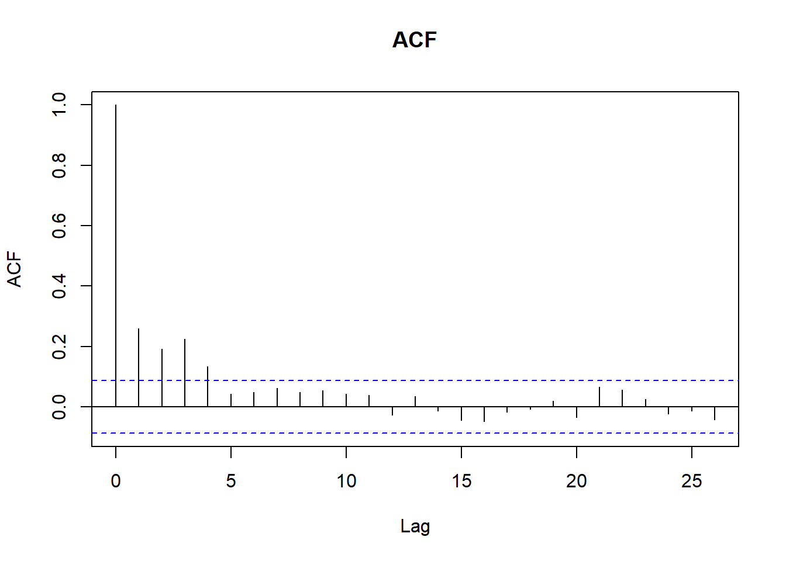
Código
pacf(arma22, main ="PACF")
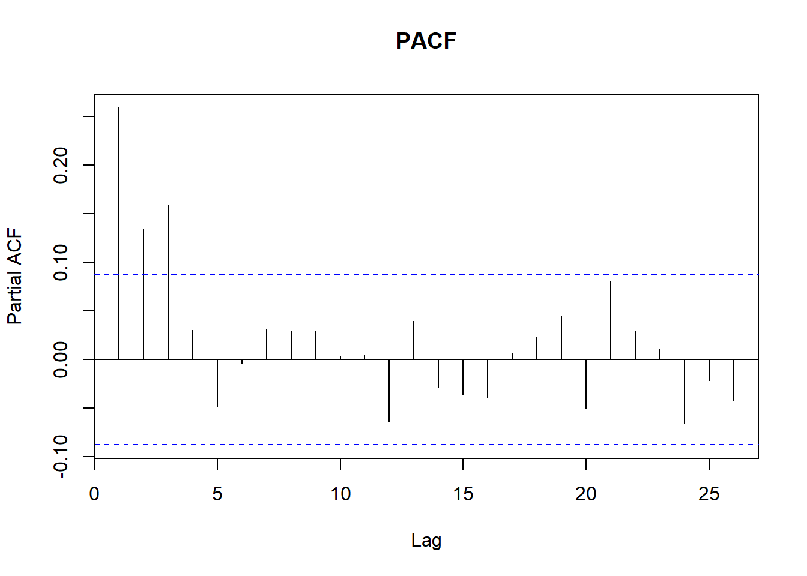
3.12 Motivación: Ejemplo de diferenciación para eliminar tendencias
3.12.1 Serie con tendencia lineal
Considere una serie temporal \(\{Y_t\}\) definida como: \[
Y_t = a + bt + \varepsilon_t, \quad \varepsilon_t \sim N(0, \sigma^2).
\]
Esta serie no es estacionaria debido a la tendencia lineal \(bt\).
Primera diferencia: \[
(1 - B)Y_t = Y_t - Y_{t-1} = b + (\varepsilon_t - \varepsilon_{t-1}).
\]
La tendencia lineal desaparece, y la serie diferenciada \((1 - B)Y_t\) es estacionaria.
3.12.2 Serie con tendencia cuadrática
Si la serie incluye una tendencia cuadrática: \[
Y_t = a + bt + ct^2 + \varepsilon_t, \quad \varepsilon_t \sim N(0, \sigma^2).
\]
Primera diferencia: \[
(1 - B)Y_t = Y_t - Y_{t-1} = b + c(2t - 1) + (\varepsilon_t - \varepsilon_{t-1}).
\]
La tendencia residual \(c(2t - 1)\) aún persiste.
Segunda diferencia: \[
(1 - B)^2 Y_t = Y_t - 2Y_{t-1} + Y_{t-2}.
\]
Al aplicar la segunda diferencia, se elimina la tendencia cuadrática, resultando en una serie estacionaria \((1 - B)^2 Y_t\).
3.13 Proceso autorregresivo integrado de medias móviles (ARIMA)
Un proceso ARIMA(p, d, q) se emplea para modelar series temporales no estacionarias que pueden transformarse en estacionarias mediante diferenciación. Una serie \(\{Y_t\}\) se clasifica como no estacionaria homogénea si, aunque no es estacionaria en su forma original, al aplicar diferencias de orden \(d\): \[
w_t = (1 - B)^d Y_t,
\]
se obtiene una serie \(\{w_t\}\) estacionaria. Aquí, \(B\) denota el operador de retardo (\(B Y_t = Y_{t-1}\)).
El modelo ARIMA(p, d, q) se define mediante la ecuación: \[
\Phi(B)(1 - B)^d Y_t = \delta + \Theta(B) \varepsilon_t,
\]
donde:
- \(\Phi(B) = 1 - \phi_1 B - \phi_2 B^2 - \cdots - \phi_p B^p\) representa el componente autorregresivo de orden \(p\).
- \(\Theta(B) = 1 + \theta_1 B + \theta_2 B^2 + \cdots + \theta_q B^q\) corresponde al componente de medias móviles de orden \(q\).
- \((1 - B)^d\) es el operador de diferenciación de orden \(d\), que elimina tendencias o patrones no estacionarios.
- \(\delta\) es un término constante ajustado tras la diferenciación.
- \(\varepsilon_t \sim N(0, \sigma^2)\) es ruido blanco.
El proceso de modelado implica tres etapas principales: diferenciar la serie \(d\) veces para lograr estacionariedad, identificar los órdenes \(p\) y \(q\) para el modelo ARMA aplicado a la serie diferenciada, y finalmente estimar y validar los parámetros del modelo.
Este enfoque integra la capacidad de los modelos ARMA para capturar dependencias en series estacionarias, combinándola con la diferenciación para manejar no estacionariedades en los datos originales.
Abraham, Bovas, y Johannes Ledolter. 1983. Statistical Methods for Forecasting. 1.ª ed. New Jersey: Wiley.
Cowpertwait, Paul S. P., y Andrew V. Metcalfe. 2009. Introductory Time Series with R. 1.ª ed. Wiley series en probability y mathematical statistics. Applied probability y statistics. Baltimore: Springer.
Enders, Walter. 2015. Applied Econometric Time Series. 1.ª ed. New York: Wiley.
Hamilton, J. D. 2020. Times series Analysis. 1.ª ed. Wiley.
Montgomery, Douglas C., Cheryl L. Jennings, y Murat Kulahci. 2008. Introduction to Time Series Analysis and Forecasting. 1.ª ed. Wiley series en probability y mathematical statistics. Applied probability y statistics. New York: Wiley.